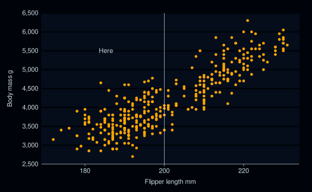
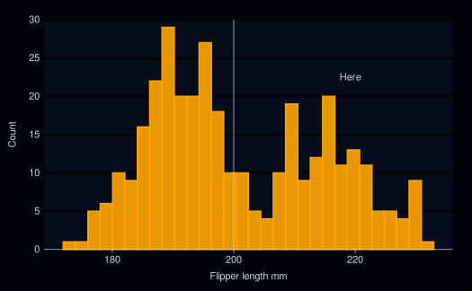

Set a default style by setting a default mode, a series of geom and annotate aesthetic defaults, and a default col_palette for discrete and continuous scales.
Usage
set_blanket(
mode = light_mode_r(),
geom_colour = "#357ba2",
geom_linewidth = 0.66,
geom_size = 1.5,
annotate_colour = "#121b24",
annotate_linewidth = 0.33,
annotate_size = 3.88,
annotate_family = "",
col_palette_discrete = c(teal, orange, navy, red),
col_palette_continuous = viridisLite::mako(n = 20, direction = -1),
theme = light_mode_r(orientation = "x"),
...
)Arguments
- mode
A default
*_mode_*. E.g.light_mode_t(),grey_mode_r(), ordark_mode_r().- geom_colour
A default hex colour (and fill) for geoms. Fill inherits from this colour. Defaults to
blue.- geom_linewidth
A default linewidth for geoms. Fill inherits from this colour. Defaults to 0.66.
- geom_size
A default point size for
*_point.*_pointrangemultiplies this by 0.25. Defaults to 1.5. .- annotate_colour
A default hex colour (and fill) for geoms commonly used for annotation (i.e.
*_vline,*_hline,*_abline,*_curve,*_textand*_label). Defaults to "#121b24" (i.e.lightness[1]).- annotate_linewidth
A default linewidth for geoms commonly used for annotation (i.e.
*_vline,*_hline,*_abline,*_curve,*_textand*_label). Defaults to 0.33 (i.e.linewidthness[1]).- annotate_size
A default size for
*_textand*_label. Defaults to 3.88.- annotate_family
A default family for
*_textand*_label. Defaults to ""- col_palette_discrete
A default col_palette to use in the discrete scale. A character vector of hex codes (or names).
- col_palette_continuous
A default col_palette to use in the continuous scale. A character vector of hex codes (or names).
- theme
A default ggplot2 theme to be
+-ed on unmodified togg_*functions. Note,modetakes precedence, unlessmode = NULL.- ...
Provided to support trailing commas only.
Examples
library(ggplot2)
library(ggblanket)
library(palmerpenguins)
set_blanket(
mode = dark_mode_r(),
geom_colour = orange,
annotate_colour = darkness[1],
)
penguins |>
gg_point(
x = flipper_length_mm,
y = body_mass_g,
x_breaks = scales::breaks_pretty(3),
) +
geom_vline(xintercept = 200) +
annotate("text", x = I(0.25), y = I(0.75), label = "Here")
#> Warning: Removed 2 rows containing missing values or values outside the scale range
#> (`geom_point()`).

penguins |>
gg_histogram(
x = flipper_length_mm,
x_breaks = scales::breaks_pretty(3),
) +
geom_vline(xintercept = 200) +
annotate("text", x = I(0.75), y = I(0.75), label = "Here")
#> `stat_bin()` using `bins = 30`. Pick better value with `binwidth`.
#> Warning: Removed 2 rows containing non-finite outside the scale range (`stat_bin()`).
